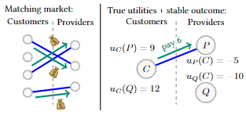
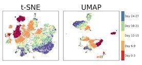
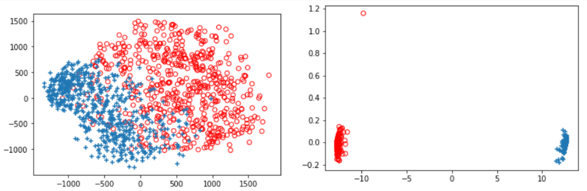
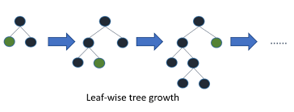

|
Nirjhar Das
I am a final year student at IIT Delhi pursuing B.Tech in Electrical Engineering (Power And Automation). I am completing my thesis under Prof. Arpan Chattopadhyay in areas of Reinforcement Learning and Multi-Armed Bandits. Alongside my major, I am also pursuing a Specialization in Cognitive and Intelligent Systems in the Dept. of EE, IIT Delhi.
My research interest spans theoretical and applied areas in Reinforcement Learning and Multi-Armed Bandits. My broader research motivation is to design agents that can learn in ways similar to humans, that is, agents that rely on abstraction and are data-efficient.
Apart from my thesis, I am working with Prof. Siddharth Barman at the Dept. of CSA, IISc Bangalore in the area of Learning in Games with Bandit Feedback. Before that, I have also worked with Prof. Rahul Garg, CSE, IIT Delhi in the area of computer vision and Prof. Jaydeva , EE, IIT Delhi in the area of ML algorithms.
Email /
CV /
Google Scholar /
Linkedin /
Github /
Twitter
|

|
Work Experience
 |
AI Research InternJune 2022 - July 2022
Mastercard AI Garage
Research Area: Semi-Supervised Deep Learning Framework for Credit Card Fraud Detection
|
 |
Machine Learning InternSeptember 2020 - January 2021
Creatospace
Project: Question/Answer Recommender System Model for Stack Overflow-like forums
|
 |
A View Independent Classification Framework for Yoga Postures
Mustafa Chasmai,
Nirjhar Das, Aman Bhardwaj, Rahul Garg
Springer Nature Computer Science (SNCS), Vol. 3, 2022
project /
paper /
abstract /
bibtex
Yoga is a globally acclaimed and widely recommended practice for a healthy living. Maintaining correct posture while performing a Yogasana is of utmost importance. In this work, we employ transfer learning from human pose estimation models for extracting 136 key-points spread all over the body to train a random forest classifier which is used for estimation of the Yogasanas. The results are evaluated on an in-house collected extensive yoga video database of 51 subjects recorded from four different camera angles. We use a three step scheme for evaluating the generalizability of a Yoga classifier by testing it on (1) unseen frames, (2) unseen subjects, and (3) unseen camera angles. We argue that for most of the applications, validation accuracies on unseen subjects and unseen camera angles would be most important. We empirically analyze over three public datasets, the advantage of transfer learning and the possibilities of target leakage. We further demonstrate that the classification accuracies critically depend on the cross validation method employed and can often be misleading. To promote further research, we have made key-points dataset and code publicly available.
@article{chasmai2022view,
title={A View Independent Classification Framework for Yoga Postures},
author={Chasmai, Mustafa and Das, Nirjhar and Bhardwaj, Aman and Garg, Rahul},
journal={Springer Nature Computer Science},
url = {https://doi.org/10.1007/s42979-022-01376-7},
year={2022}
}
|
 |
Gene expression based inference of cancer drug sensitivity
Smriti Chawla, Anja Rockstroh, Melanie Lehman, Ellca Ratther, Atishay Jain, Anuneet Anand, Apoorva Gupta, Namrata Bhattacharya, Sarita Poonia, Priyadarshini Rai, Nirjhar Das, Angshul Majumdar, Jayadeva, Gaurav Ahuja, Brett G. Hollier, Colleen C. Nelson and Debarka Sengupta
Nature Communications, Vol. 13, 2022
paper /
abstract /
bibtex
Inter and intra-tumoral heterogeneity are major stumbling blocks in the treatment of cancer and are responsible for imparting differential drug responses in cancer patients. Recently, the availability of high-throughput screening datasets has paved the way for machine learning based personalized therapy recommendations using the molecular profiles of cancer specimens. In this study, we introduce Precily, a predictive modeling approach to infer treatment response in cancers using gene expression data. In this context, we demonstrate the benefits of considering pathway activity estimates in tandem with drug descriptors as features. We apply Precily on single-cell and bulk RNA sequencing data associated with hundreds of cancer cell lines. We then assess the predictability of treatment outcomes using our in-house prostate cancer cell line and xenografts datasets exposed to differential treatment conditions. Further, we demonstrate the applicability of our approach on patient drug response data from The Cancer Genome Atlas and an independent clinical study describing the treatment journey of three melanoma patients. Our findings highlight the importance of chemo-transcriptomics approaches in cancer treatment selection.
@article{Chawla2022,
author={Chawla, Smriti and Rockstroh, Anja and Lehman, Melanie and Ratther, Ellca and Jain, Atishay and Anand, Anuneet and Gupta, Apoorva and Bhattacharya, Namrata and Poonia, Sarita and Rai, Priyadarshini and Das, Nirjhar and Majumdar, Angshul and {Jayadeva} and Ahuja, Gaurav and Hollier, Brett G. and Nelson, Colleen C. and Sengupta, Debarka},
title={Gene expression based inference of cancer drug sensitivity},
journal={Nature Communications},
year={2022},
month={Sep},
day={27},
volume={13},
number={1},
pages={5680},
issn={2041-1723},
doi={10.1038/s41467-022-33291-z},
url={https://doi.org/10.1038/s41467-022-33291-z}
}
|
|  |
Learning the Core with Bandit Feedback
Feb'23-Present
Advisor: Prof. Siddharth Barman
Working on the problem of learning the core of a cooperative game with bandit feedback by developing a novel problem model and algorithms to solve it with sublinear regret bounds.
|
 |
Online Inverse Reinforcement Learning
Jan'23-Present
Advisor: Prof. Arpan Chattopadhyay
Developing new algorithms for Online Inverse Reinforcement Learning and working on providing theoretical guarantees using theories of Online Learning and Concentration Bounds.
|
 |
Linear Bandits with Rotting Rewards
Sep'22-Present
Advisor: Prof. Arpan Chattopadhyay
Formulated the problem of rotting multi-armed bandits in linear reward setting. Work currently focuses on developing algorithms, establishing regret bounds and validating through simulation.
|
 |
Constrained Inverse Reinforcement Learning
Dec'21-Dec'22
Advisor: Prof. Arpan Chattopadhyay
Developed fundamental algorithms for inverse reinforcement learning in constrained Markov Decision Processes using Maximum Likelihood Estimation and Convex Optimization. Validated the algorithm through simulation.
|
 |
Graph UMAP
Jan'22-Apr'22
Advisor: Prof. Sandeep Kumar
Developed the graph version of UMAP using Graph Convolution Networks to extend the method to Graph data by modifying the UMAP Loss function to incorporate the pre-existing graph structure of the data to obtain richer embedding.
|
 |
Explorations in Machine Learning (Independent Study)
Aug'21-Nov'21
Advisor: Prof. Jayadeva
Extensively studied Tensor Factorization and its use in data compression and applied it in Minimal Complexity Machine to generate a faster and more interpretable pipeline. Also developed a Separability based Classification Loss function for Neural Networks and demonstrated results on MNIST for classification task with better separation.
Code
|
 |
LightGBM based Botnet Detection Tool (3rd Prize among 1200+ Participants)
Aug'20
Developed a Botnet Detection Tool on network packet capture data using Gradient Boosted Decision Tree based LightGBM implementing feature extraction, feature design and compared it with AdaBoost and Random Forest.
|
|